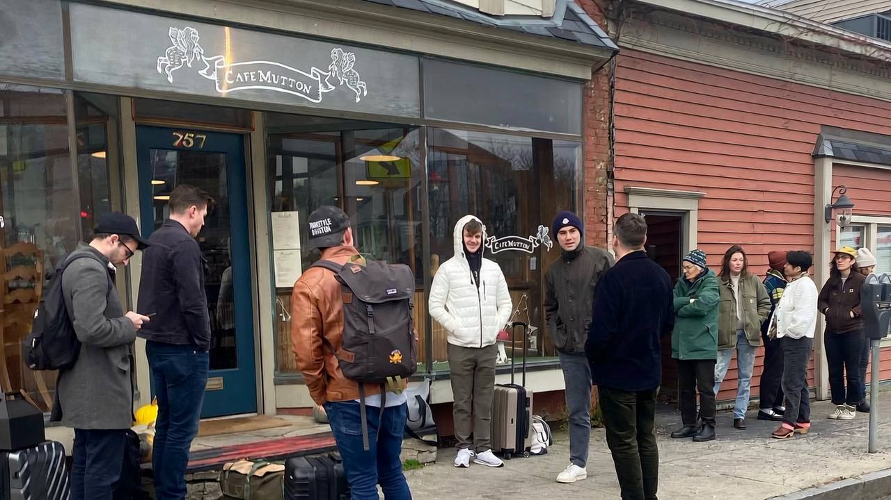
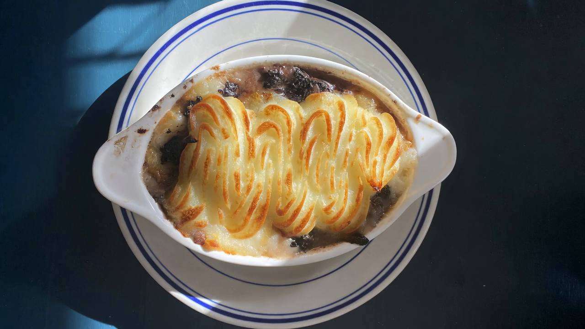
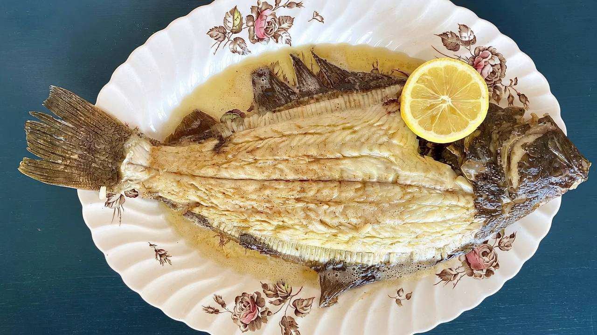
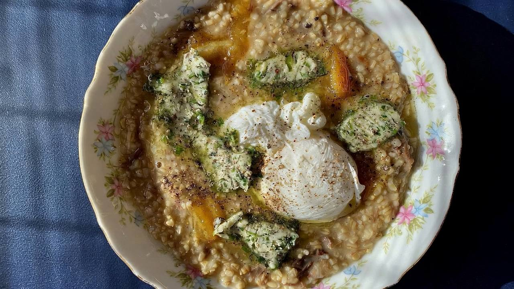
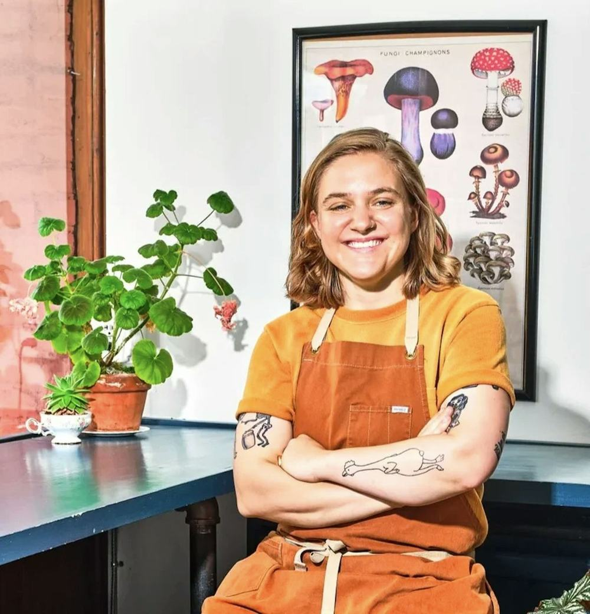
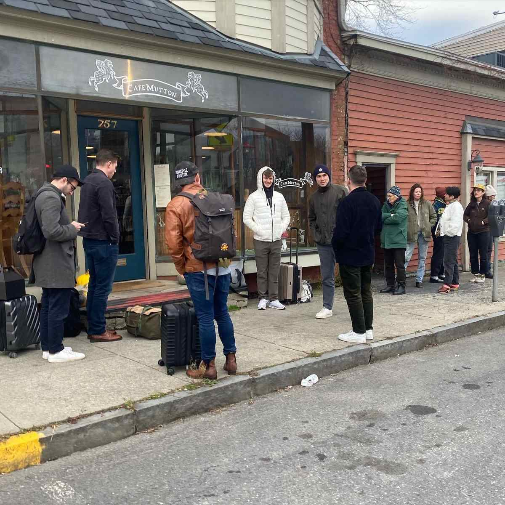

Illustrative motion generated from Cafe Mutton’s photos, not filmed
757 Columbia Street · Hudson, New York
Simple food, very close attention.
Today Dinner Wed–Fri 5–9 PM · Brunch Sat–Sun 10 AM–3 PM · Closed Mon–Tue

A small neighborhood restaurant on a sunny corner in Hudson.
Welcome to Cafe Mutton
What Cafe Mutton is about
Our food is simple, but we pay it very close attention, and we really like meat. We also like vegetables (so much), and what we really like more than anything is the way excellent food can make a person feel:
calm and hopeful and glad and silly and beautiful.
From the restaurant’s welcome at cafemutton.com

Illustrative motion generated from Cafe Mutton’s photos, not filmed
Very close attention.
Dinner Wednesday to Friday, 5 to 9. The dinner menu changes every Friday; brunch changes with the seasons.

Illustrative motion generated from Cafe Mutton’s photos, not filmed. The table between the plates is AI-generated.
Off the board · Saturday 10/17
Specials
Specials run out and change daily. Call to check: (518) 671-6230.
As listed on cafemutton.com/press
People noticed
- James Beard FoundationBest Chef: New York State, finalist
- The New York TimesAmerica’s Best Restaurants 2022
- Bon Appétit10 Best New Restaurants 2022
- Chronogram“The corner eatery that’s become a neighborhood hot spot”

Illustrative motion generated from Cafe Mutton’s photos, not filmed
Brunch, Saturday & Sunday, 10 to 3.
Walk in. Brunch doesn’t take reservations.

The crew
Who’s in the kitchen
- Shaina Loew-Banayan
- Chef & owner
- Eloiser
- General manager & security guard
“Coincidentally, every employee that works at Cafe Mutton was bitten by a rabid skunk at some point in their childhood, and that is why our crew is so awesome*”
*This is not the type of phenomenon that can be intentionally replicated.
On the sunny corner
Visit
Cafe Mutton757 Columbia Street
Hudson, NY 12534
| Monday | Closed |
|---|---|
| Tuesday | Closed |
| Wednesday | Dinner 5–9 PM |
| Thursday | Dinner 5–9 PM |
| Friday | Dinner 5–9 PM |
| Saturday | Brunch 10 AM–3 PM |
| Sunday | Brunch 10 AM–3 PM |
Reservations: the restaurant’s site says Friday dinner only, while its booking page takes Wednesday–Friday dinner. Brunch and the bar are walk-in. Holiday hours aren’t posted. Call to confirm: (518) 671-6230.
